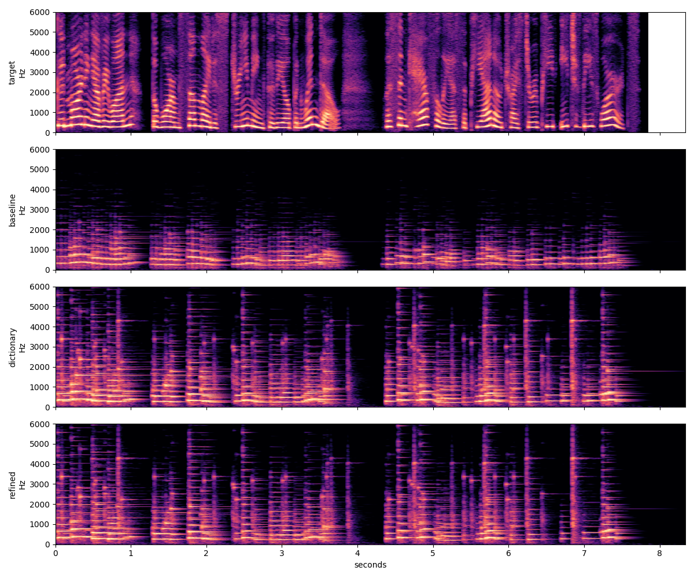
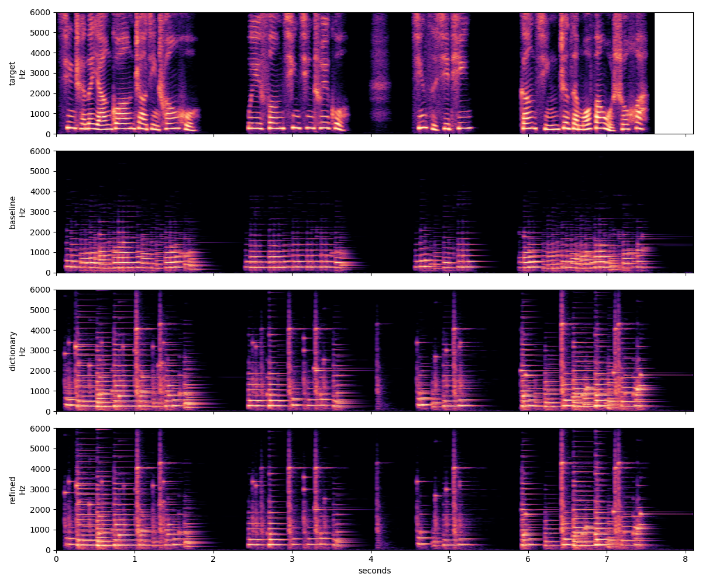

Two approximately eight-second Qwen3-TTS recordings, fitted using only the Grand Piano preset in gm.sf3. Both use Qwen3-TTS 1.7B VoiceDesign with the same recorded voice-design instruction. Compare the speech with its piano reconstruction, then inspect the exported MIDI.
Listen before revealing the transcript. Lower spectral error does not establish speech intelligibility. These longer examples have not received ASR or human listening evaluation. Playback uses saved audio; no model download or external service is required.
一位温柔自信的年轻女性，声音清晰，语气亲切，表达轻快而富有感染力。
This exact instruction was supplied to VoiceDesign for both recordings.
148 MIDI notes · log-band error 0.4577 → 0.3875 (15.3% reduction).
Good morning, everyone. The warm sunlight is streaming through the open window. Listen carefully as the piano tries to repeat each of these words.
Download MIDI · Original Qwen output · Metrics
Play the fitted piano to follow the cursor. Click the roll to seek. Colors show velocity; rectangles show key-hold duration, not release tails.
Velocity: 1 127

117 MIDI notes · log-band error 0.4480 → 0.3923 (12.4% reduction).
清晨的阳光照进窗户，微风轻轻吹过。请仔细听，钢琴正在模仿我说话。
Download MIDI · Original Qwen output · Metrics
Play the fitted piano to follow the cursor. Click the roll to seek. Colors show velocity; rectangles show key-hold duration, not release tails.
Velocity: 1 127
